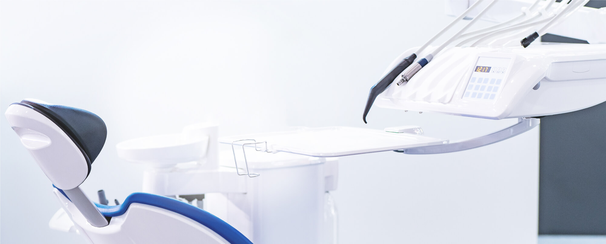
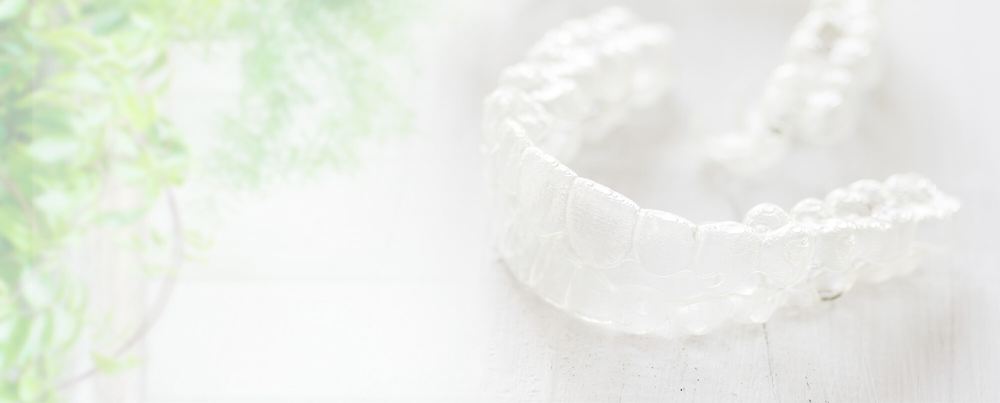
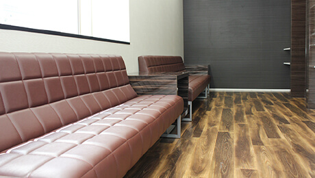
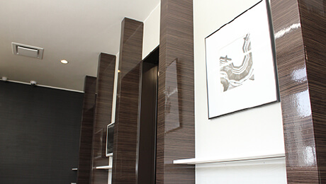
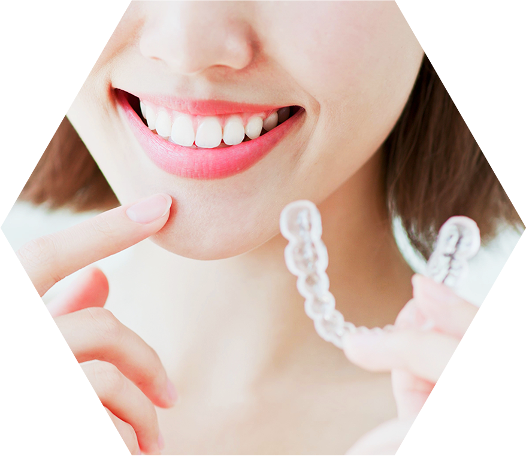
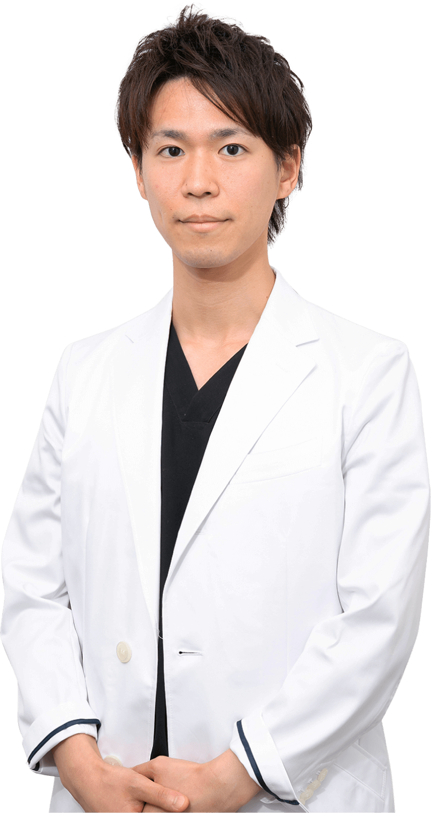

輝く笑顔を引き立てるのは
美しい口元です
歯並びを整えて健康美を手に入れませんか？
通いやすい歯科医院で、
ずっと美しく健康に
渋谷駅すぐで土日も診療します

口元の健康だけでなく
心身の健康のために
口元の健康美を歯科矯正で手に入れましょう

医療法人清翔会「渋谷ルーブル歯科・矯正歯科」は令和元年11月26日に渋谷駅すぐの通いやすい立地に新規開院いたします。通勤や通学、お買い物で渋谷駅をご利用の方に便利な歯医者です。
※11/26・27・29・30は自費診療のみ。12/1から保険診療も行います。
 
医院の様子や設備をご覧いただきながら、矯正治療など口元のお悩みについてご相談いただけます。口元にお悩みをお持ちの方は是非、お気軽にご相談ください。
医療法人清翔会「渋谷ルーブル歯科・矯正歯科」は、歯並びをきれいにする矯正治療を中心に、歯科全般に対応し、あなたの笑顔のためにお口まわりの機能性と自然な美しさをサポートします。
治療していることに気づかれないような自然で美しい透明感や色調の素材で、虫歯を治療しませんか？口元のコンプレックスを解消して、もう笑顔をためらわないでください。保険診療の虫歯治療で入れた銀歯が気になりませんか？ たしかに黒っぽく見えて目立ちます。銀歯をセラミック製の人工歯に取り替えれば、口元が気になって笑顔をためらうこともなくなるはずです。歯の機能回復とともに自然な見た目の美しさにも重点を置きますので、さまざまな素材の審美プランからご選択ください。

何でも好きなものを食べたいと思いませんか？ チタン製のインプラントが顎の骨で安定すると、歯を失ってもまるで自分の歯で食べるような感覚がふたたび得られます。顎の骨に人工歯根（歯科用インプラント）を埋め込んで支台にして被せ物や特殊な入れ歯を使って歯の機能回復をはかるのがインプラント治療です。人工歯根が顎の骨としっかり結合すると、自分の歯にかなり近い感覚でグッと噛みしめることができます。歯を失っても食べることを諦めないでください。
白い歯には憧れる反面、歯を削って白い歯を入れるのには抵抗がある方は、着色した歯を、薬剤を用いて白くします。歯が白いとお顔全体が明るく見えるのもうれしいメリットです。いつの間にか着色してしまった歯のせいで笑顔をためらっていませんか？ 色素沈着した歯は薬剤を使って白くできるかもしれません。それが歯科ホワイトニングです。毎日口にする色の濃い飲食物によって黄ばんでしまった歯は、削ることなく白くできます。白さの効果には個人差がありますので、まずはお気軽にご相談ください。
「歯が痛い」「冷たい物がしみる」は虫歯が、「歯ぐきの腫れ・出血」「強い口臭」は歯周病が疑われます。
自覚症状に気づいたらできるだけ早く治療しましょう。おもに虫歯治療のことです。ほかにも歯ぐきの腫れなどが初期症状の歯周病の治療などが含まれ、「歯医者に行こう」と思うようなお口の違和感を治すのが一般歯科です。
お口まわりのお悩みは何でもお気軽にご相談ください。
渋谷駅近くの歯医者「渋谷ルーブル歯科・矯正歯科」は、歯並びをきれいにする矯正歯科治療を中心に、虫歯や歯周病の治療から、自然な美しさと機能回復の両立をはかる審美治療そしてインプラント治療まで歯科全般に対応します。まず、患者様のお話をじっくり伺い、心を通わせるコミュニケーションを大切に、ご納得いただける治療をご提案・ご提供します。治療を終えたときに笑顔になっていただけるように日々診療する歯科医院です。その笑顔をずっとサポートするためのメンテナンスにも力を入れます。お口まわりのお悩みは何でもご相談ください。

医療法人清翔会
渋谷ルーブル歯科・矯正歯科院長 水谷倫康